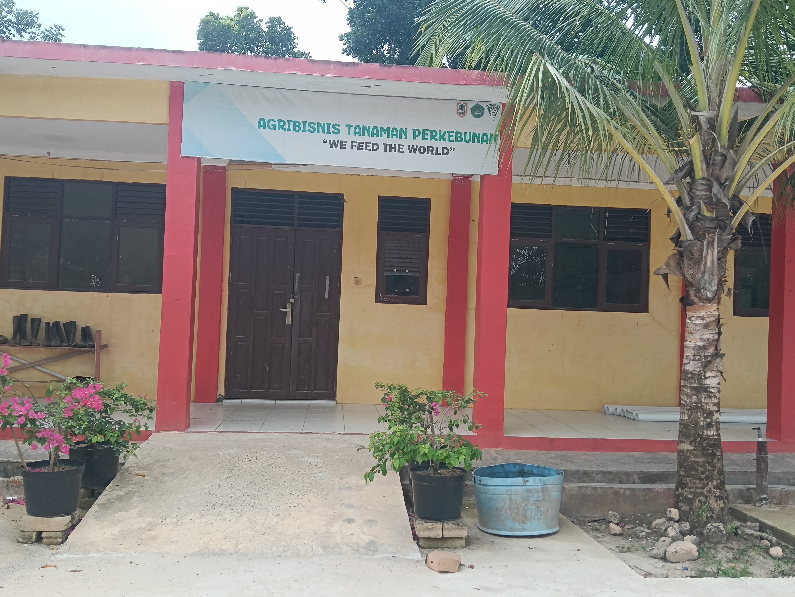
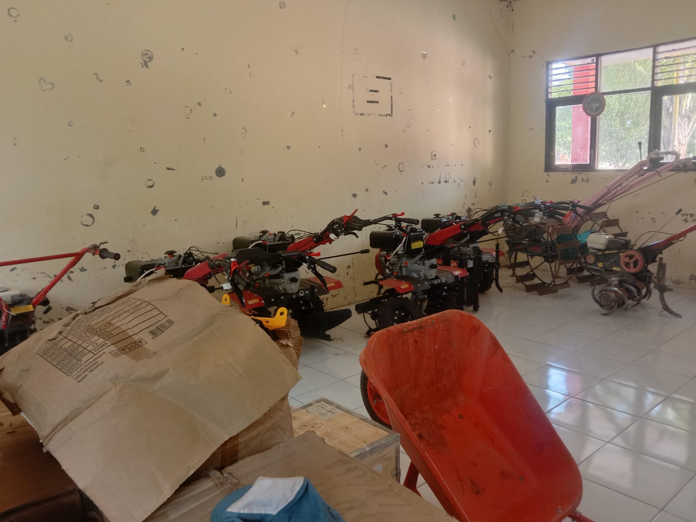
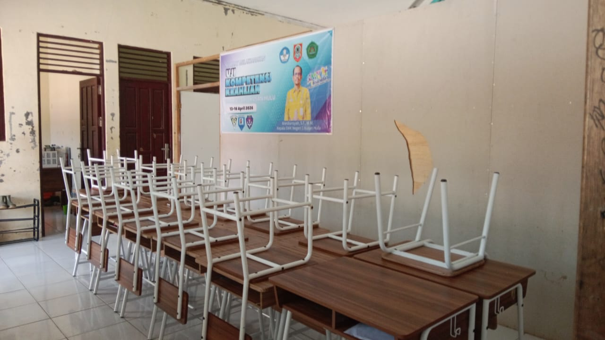
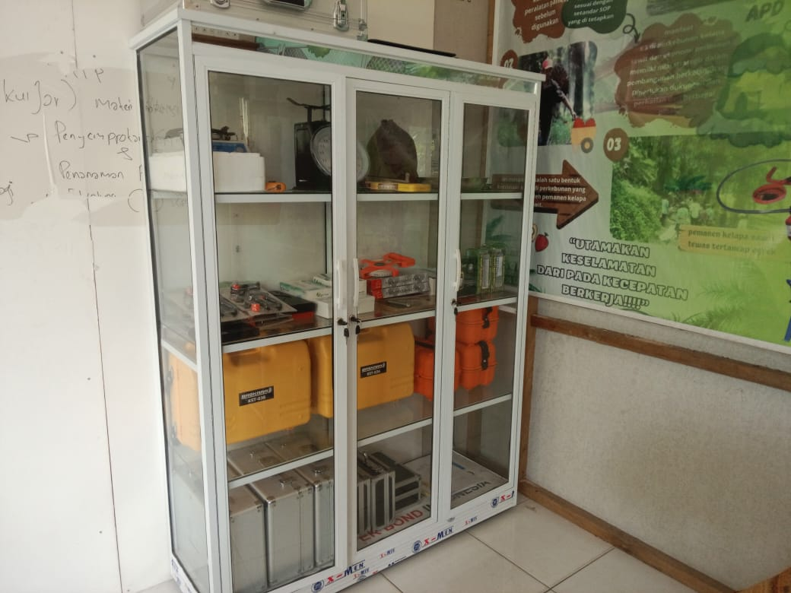
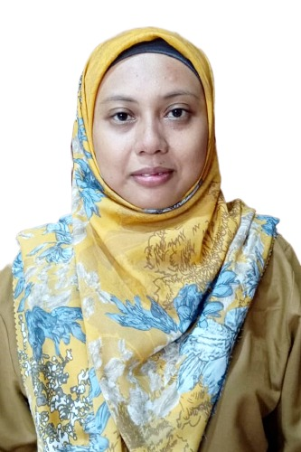
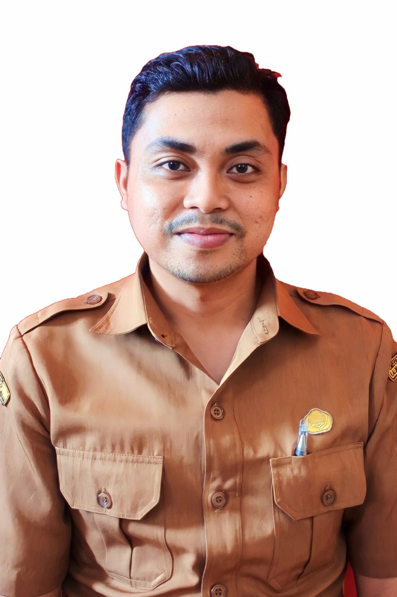

Program Keahlian Agribisnis Tanaman Perkebunan

Mengenal Program ATP
Program Keahlian Agribisnis Tanaman Perkebunan berfokus pada pengembangan pengetahuan dan keterampilan di bidang pertanian perkebunan. Peserta didik diperkenalkan pada berbagai tahapan pengelolaan tanaman dan hasil perkebunan.
Kompetensi yang Dipelajari
01. Persiapan Lahan
Mengenal kondisi lahan dan tahapan persiapan sebelum proses penanaman.
02. Pembibitan
Mempelajari proses pemilihan benih, penyemaian, dan perawatan bibit tanaman.
03. Pemeliharaan Tanaman
Mengenal cara merawat tanaman agar dapat tumbuh dan berkembang dengan baik.
04. Pemanenan
Memahami tahapan panen serta penanganan hasil tanaman perkebunan.
Fasilitas Program Keahlian

Alat dan Mesin Pertanian

Meja dan Ruang Belajar

Lemari Penyimpanan
Tenaga Pendidik Jurusan
Tenaga pendidik yang berperan dalam pengelolaan dan pembelajaran program keahlian.
I Komang Astina, S.Pd.
Kepala Program Keahlian

Hana Paramitha Almira Sari Devi, S.P.
Guru Produktif

Abdul Azis Muslim, S.P.
Guru Produktif